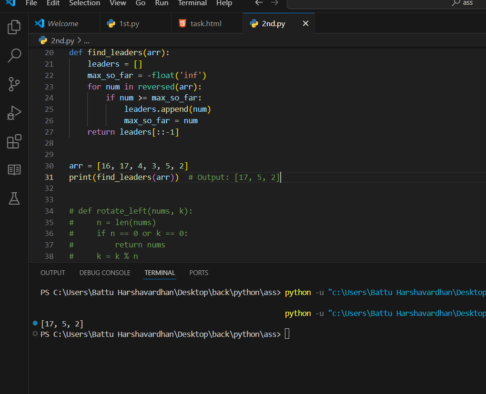

1) rotate the array to the right by k steps, where k is non-negative.
https://leetcode.com/problems/rotate-array/description/
2) A Leader Number
https://www.geeksforgeeks.org/problems/leaders-in-an-array-1587115620/1?utm_source=youtube&utm_medium=collab_striver_ytdescription&utm_campaign=leaders-in-an-array

Given an array of integers, rotating array of elements by k elements either left.
Input: N = 6, array[] = {3,7,8,9,10,11} , k=3 , left
Output: 9 10 11 3 7 8
Explanation: Array is rotated to right by 3 positions.